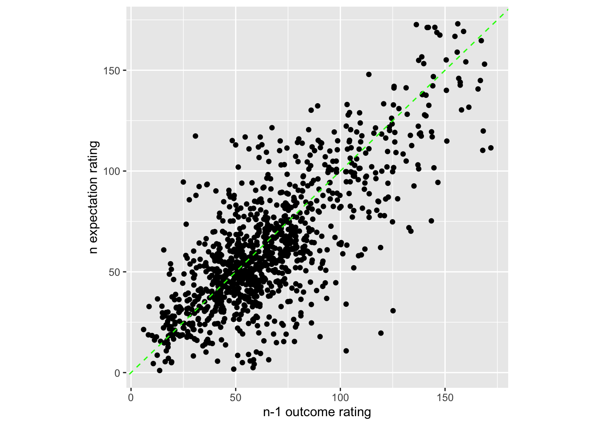
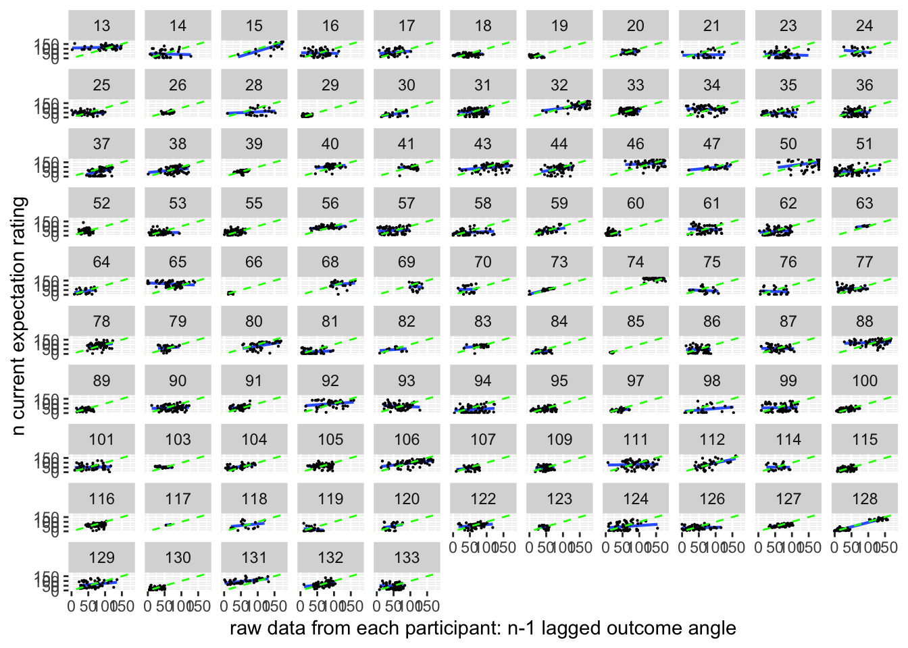
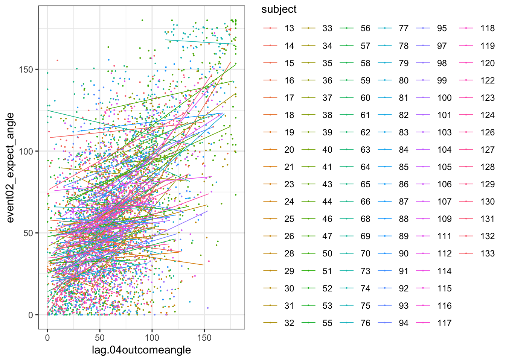
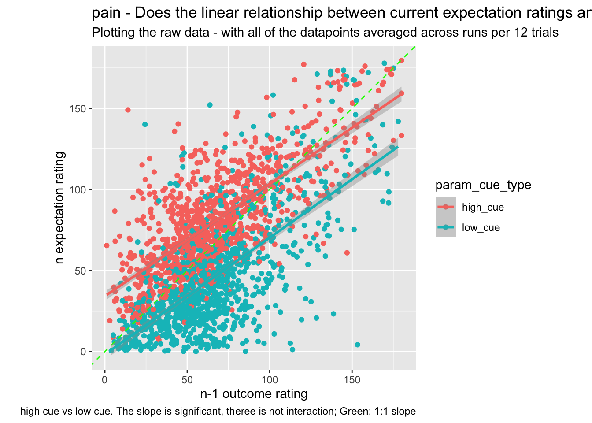
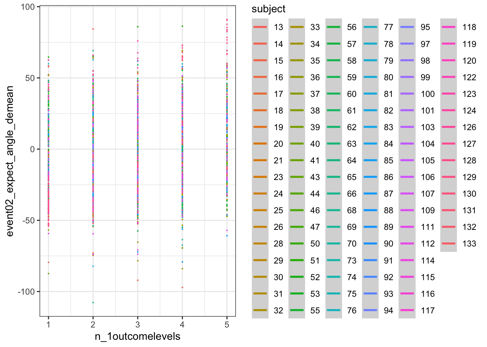
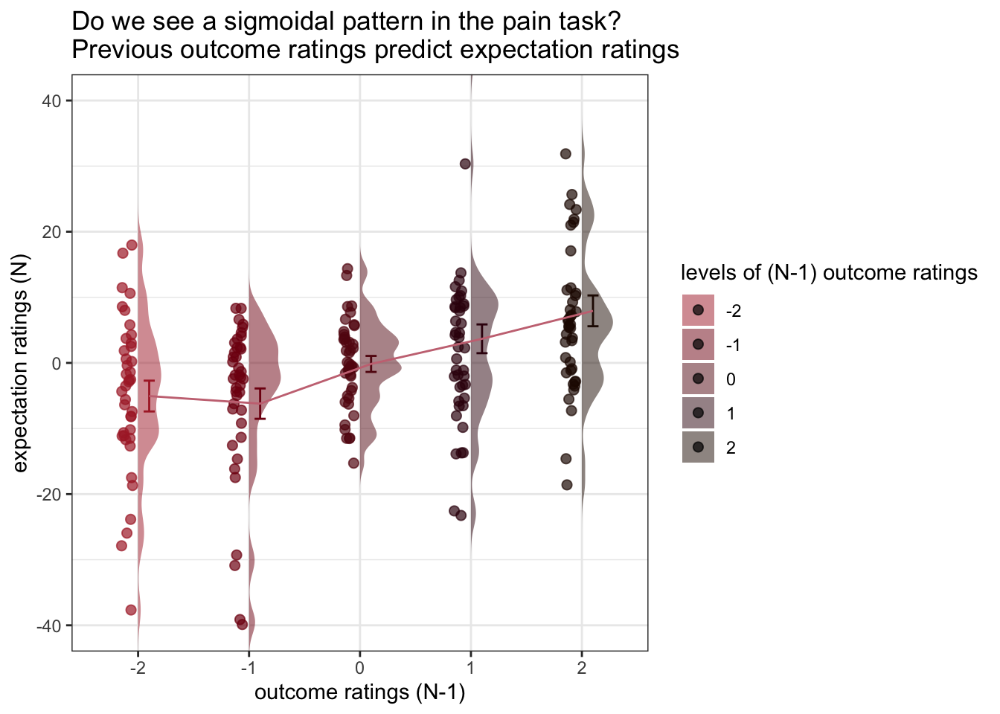

Chapter 11 N-1 outcome rating ~ N expectation rating
date: '2022-09-13'
updated: '2023-01-18'11.0.1 DONE
- plot individual ratings (check distribution)
- afterwards, normalize the ratings and bin them
11.1 Overview
My hypothesis is that the cue-expectancy follows a Bayesian mechanism, akin to what’s listed in Jayazeri (2019) Here, I plot the expectation ratings (N) and outcome ratings (N-1) and see if the pattern is akin to a sigmoidal curve. If so, I plan to dive deeper and potentially take a Bayesian approach. Jayazeri (2018)
library
load data and combine participant data
main_dir = dirname(dirname(getwd()))
datadir = file.path(main_dir, 'data', 'beh', 'beh02_preproc')
# parameters _____________________________________ # nolint
subject_varkey <- "src_subject_id"
iv <- "param_cue_type"
dv <- "event03_RT"
dv_keyword <- "RT"
xlab <- ""
taskname <- "pain"
ylab <- "ratings (degree)"
subject <- "subject"
exclude <- "sub-0999|sub-0001|sub-0002|sub-0003|sub-0004|sub-0005|sub-0006|sub-0007|sub-0008|sub-0009|sub-0010|sub-0011"
# load data _____________________________________
data <- load_task_social_df(datadir, taskname = taskname, subject_varkey = subject_varkey, iv = iv, exclude = exclude)
data$event03_RT <- data$event03_stimulusC_reseponseonset - data$event03_stimulus_displayonset
# data['event03_RT'], data.event03_RT - pandas
analysis_dir <- file.path(main_dir, "analysis", "mixedeffect", "model08_iv-cue-trial_dv-expect-actual", as.character(Sys.Date()))
dir.create(analysis_dir, showWarnings = FALSE, recursive = TRUE)11.2 Do previous outcome ratings predict current expectation ratings?
Additional analyse 01/18/2023
- see if current expectation ratings predict outcome ratings
- see if prior stimulus experience (N-1) predicts current expectation ratings
- see if current expectation ratings are explained as a function of prior outcome rating and current expectation rating
when loading the dataset, I need to add in trial index per dataframe. Then, for the shift the rating?
data_p2= data %>%
arrange(src_subject_id ) %>%
group_by(src_subject_id) %>%
mutate(trial_index = row_number())
data_a3 <- data_p2 %>%
group_by(src_subject_id, session_id, param_run_num) %>%
mutate(trial_index = row_number(param_run_num))
data_a3lag <-
data_a3 %>%
group_by(src_subject_id, session_id, param_run_num) %>%
mutate(lag.04outcomeangle = dplyr::lag(event04_actual_angle, n = 1, default = NA))
data_a3lag_omit <- data_a3lag[complete.cases(data_a3lag$lag.04outcomeangle),] trialorder_subjectwise_lagoutcome <- meanSummary(
data_a3lag_omit,
c("src_subject_id", "session_id", "param_run_num"), "lag.04outcomeangle" )
trialorder_subjectwise_lagoutcome <- meanSummary(
data_a3lag_omit,
c("src_subject_id", "session_id", "param_run_num"), "lag.04outcomeangle" )
# subjectwise_naomit <- na.omit(trialorder_subjectwise)
# trialorder_groupwise <- summarySEwithin(
# data = subjectwise_naomit,
# measurevar = "mean_per_sub",
# withinvars = c("cue_ordered", "rating_type", "trial_index"), idvar = subject
# )model.lagoutcome = lmer(event02_expect_angle ~ lag.04outcomeangle + (1 | src_subject_id) + (1|session_id) , data = data_a3lag_omit,REML = FALSE)
summary(model.lagoutcome)## Linear mixed model fit by maximum likelihood . t-tests use Satterthwaite's
## method [lmerModLmerTest]
## Formula: event02_expect_angle ~ lag.04outcomeangle + (1 | src_subject_id) +
## (1 | session_id)
## Data: data_a3lag_omit
##
## AIC BIC logLik deviance df.resid
## 45963.1 45995.5 -22976.5 45953.1 4802
##
## Scaled residuals:
## Min 1Q Median 3Q Max
## -3.8951 -0.6900 0.0076 0.6633 3.3486
##
## Random effects:
## Groups Name Variance Std.Dev.
## src_subject_id (Intercept) 472.64749 21.7405
## session_id (Intercept) 0.01642 0.1281
## Residual 773.58775 27.8134
## Number of obs: 4807, groups: src_subject_id, 104; session_id, 3
##
## Fixed effects:
## Estimate Std. Error df t value Pr(>|t|)
## (Intercept) 4.360e+01 2.419e+00 1.356e+02 18.02 <2e-16 ***
## lag.04outcomeangle 2.778e-01 1.588e-02 3.381e+03 17.49 <2e-16 ***
## ---
## Signif. codes: 0 '***' 0.001 '**' 0.01 '*' 0.05 '.' 0.1 ' ' 1
##
## Correlation of Fixed Effects:
## (Intr)
## lg.04tcmngl -0.430anova(model.lagoutcome)## Type III Analysis of Variance Table with Satterthwaite's method
## Sum Sq Mean Sq NumDF DenDF F value Pr(>F)
## lag.04outcomeangle 236683 236683 1 3380.8 305.95 < 2.2e-16 ***
## ---
## Signif. codes: 0 '***' 0.001 '**' 0.01 '*' 0.05 '.' 0.1 ' ' 1# startvec <- c(Asym = 200, xmid = 725, scal = 350)
# (nm1 <- nlmer(circumference ~ SSlogis(age, Asym, xmid, scal) ~ Asym|Tree,
# Orange, start = startvec))
#
# (nm1a <- update(nm1, nAGQ = 0L))
startvec <- c(Asym =10, xmid = 0, scal = 350)
nm1 <- nlmer(event02_expect_angle ~ SSlogis(lag.04outcomeangle,Asym, xmid, scal) ~ Asym|src_subject_id,
data_a3lag_omit, start = startvec)
#nm1a <- update(nm1, nAGQ = 0L)nform <- ~Asym/(1+exp((xmid-input)/scal))
## b. Use deriv() to construct function:
nfun <- deriv(nform,namevec=c("Asym","xmid","scal"),
function.arg=c("input","Asym","xmid","scal"))
nm1b <- update(nm1,event02_expect_angle ~ nfun(lag.04outcomeangle, Asym, xmid, scal) ~ Asym | src_subject_id)summary(nm1b)## Nonlinear mixed model fit by maximum likelihood ['nlmerMod']
## Formula: event02_expect_angle ~ nfun(lag.04outcomeangle, Asym, xmid, scal) ~
## (Asym | src_subject_id)
## Data: data_a3lag_omit
##
## AIC BIC logLik deviance df.resid
## 45971.4 46003.8 -22980.7 45961.4 4802
##
## Scaled residuals:
## Min 1Q Median 3Q Max
## -3.6743 -0.7086 0.0007 0.6523 3.3206
##
## Random effects:
## Groups Name Variance Std.Dev.
## src_subject_id Asym 1.268e+07 3561.03
## Residual 7.761e+02 27.86
## Number of obs: 4807, groups: src_subject_id, 104
##
## Fixed effects:
## Estimate Std. Error t value
## Asym 10173.50 72.69 139.96
## xmid 1437.76 56.89 25.27
## scal 267.15 11.38 23.47
##
## Correlation of Fixed Effects:
## Asym xmid
## xmid -0.524
## scal -0.547 0.999library(bbmle)## Loading required package: stats4##
## Attaching package: 'bbmle'## The following object is masked from 'package:plotly':
##
## slice## The following object is masked from 'package:brms':
##
## parnames## The following object is masked from 'package:dplyr':
##
## slicebbmle::AICtab(model.lagoutcome, nm1b)## dAIC df
## model.lagoutcome 0.0 5
## nm1b 8.3 5meanSummary_2dv <- function(DATA, GROUP, DV1, DV2) {
z <- ddply(DATA, GROUP, .fun = function(xx) {
c(
DV1_mean_per_sub = mean(xx[, DV1], na.rm = TRUE),
DV1_sd = sd(xx[, DV1], na.rm = TRUE),
DV2_mean_per_sub = mean(xx[, DV2], na.rm = TRUE),
DV2_sd = sd(xx[, DV1], na.rm = TRUE)
)
})
return(z)
}subjectwise_2dv = meanSummary_2dv(data_a3lag_omit,
c("src_subject_id", "trial_index"),
"lag.04outcomeangle", "event02_expect_angle")subjectwise_naomit_2dv <- na.omit(subjectwise_2dv)sp <- ggplot(data=subjectwise_naomit_2dv,
aes(x=DV1_mean_per_sub, y=DV2_mean_per_sub)) +
geom_point() +
geom_abline(intercept = 0, slope = 1, color="green",
linetype="dashed", size=0.5) +
theme(aspect.ratio=1) +
xlab("n-1 outcome rating") +
ylab("n expectation rating")## Warning: Using `size` aesthetic for lines was deprecated in ggplot2 3.4.0.
## ℹ Please use `linewidth` instead.sp
# plot(subjectwise_naomit_2dv$DV1_mean_per_sub, subjectwise_naomit_2dv$DV2_mean_per_sub) + lines(x = c(0,200), y = c(0,200)) trialorder_groupwise <- summarySEwithin(
data = subjectwise_naomit_2dv,
measurevar = "DV1_mean_per_sub",
# betweenvars = "src_subject_id",
withinvars = factor( "trial_index"),
idvar = "src_subject_id"
)## Automatically converting the following non-factors to factors: src_subject_id trialorder_groupwise <- summarySEwithin(
data = subset(subjectwise_naomit_2dv, select = -c(src_subject_id)),
measurevar = "DV1_mean_per_sub",
# betweenvars = "src_subject_id",
withinvars = as.factor( "trial_index")
#idvar = "trial_index"
)## Automatically converting the following non-factors to factors: trial_index## Warning in qt(conf.interval/2 + 0.5, datac$N - 1): NaNs produced
## Warning in qt(conf.interval/2 + 0.5, datac$N - 1): NaNs produceddata_a3lag_omit$src_subject_id <- as.factor(data_a3lag_omit$src_subject_id)
lag.raw <- ggplot(aes(x=lag.04outcomeangle, y=event02_expect_angle), data=data_a3lag_omit) +
geom_smooth(method='lm', se=F, size=0.75) +
geom_point(size=0.1) +
geom_abline(intercept = 0, slope = 1, color="green",
linetype="dashed", size=0.5) +
facet_wrap(~src_subject_id) +
theme(legend.position='none') +
xlim(0,180) + ylim(0,180) +
xlab("raw data from each participant: n-1 lagged outcome angle") +
ylab("n current expectation rating")
lag.raw +
labs(title = paste(taskname, "- Is there a linear relationship between current expectation ratings and the previous outcome ratings?"),
subtitle = "Plotting the raw data - with all of the datapoints ignoring run differences",
caption = "Blue = fitted linear slope per participant; Green: 1:1 slope")## `geom_smooth()` using formula = 'y ~ x'## Warning: Removed 222 rows containing non-finite values (`stat_smooth()`).## Warning: Removed 222 rows containing missing values (`geom_point()`).
lag.raw## `geom_smooth()` using formula = 'y ~ x'## Warning: Removed 222 rows containing non-finite values (`stat_smooth()`).
## Removed 222 rows containing missing values (`geom_point()`).
subjectwise_naomit_2dv$src_subject_id <- as.factor(subjectwise_naomit_2dv$src_subject_id)
lag.avg <- ggplot(aes(x=DV1_mean_per_sub, y=DV2_mean_per_sub), data=subjectwise_naomit_2dv) +
geom_smooth(method='lm', se=F, size=0.75) +
geom_point(size=0.1) +
geom_abline(intercept = 0, slope = 1, color="green",
linetype="dashed", size=0.5) +
facet_wrap(~src_subject_id) +
theme(legend.position='none') +
xlim(0,180) + ylim(0,180) +
xlab("raw data from each participant: n-1 lagged outcome angle") +
ylab("n current expectation rating")
lag.avg +
labs(title = paste(taskname, "- Is there a linear relationship between current expectation ratings and the previous outcome ratings?"),
subtitle = "Observation notes: 1) The relationship is more of an attenuated one, where the higher outcome ratings lead to a slightly lower expectation rating, and a low outcome leads to a higher expectation rating, when considering a 1:1 relationship. This pattern could be explained by regression to the mean type mechanism, where participants are accounting for the fact that their previous experience was extreme on either ends and that this current trial will be under/over estimated. It probably will make sense to also see the relationship between current expectation ratings influencing current outcome ratings. ",
caption = "Blue = fitted linear slope per participant; Green: 1:1 slope")## `geom_smooth()` using formula = 'y ~ x'
# https://gist.github.com/even4void/5074855ggplot(data_a3lag_omit, aes(y = event02_expect_angle,
x = lag.04outcomeangle,
colour = subject), size = .3, color = 'gray') +
geom_point(size = .1) +
geom_smooth(method = 'lm', formula= y ~ x, se = FALSE, size = .3) +
theme_bw()## Warning: Removed 222 rows containing non-finite values (`stat_smooth()`).## Warning: Removed 222 rows containing missing values (`geom_point()`).
11.3 Additional analysis
01/23/2023 ### Do these models differ as a function of cue?
model.lag_cue = lmer(event02_expect_angle ~ lag.04outcomeangle*param_cue_type + (1 | src_subject_id) + (1|session_id) , data = data_a3lag_omit)## boundary (singular) fit: see help('isSingular')summary(model.lag_cue)## Linear mixed model fit by REML. t-tests use Satterthwaite's method [
## lmerModLmerTest]
## Formula: event02_expect_angle ~ lag.04outcomeangle * param_cue_type +
## (1 | src_subject_id) + (1 | session_id)
## Data: data_a3lag_omit
##
## REML criterion at convergence: 43641
##
## Scaled residuals:
## Min 1Q Median 3Q Max
## -4.5100 -0.6437 -0.0396 0.6280 4.0220
##
## Random effects:
## Groups Name Variance Std.Dev.
## src_subject_id (Intercept) 496.1 22.27
## session_id (Intercept) 0.0 0.00
## Residual 472.4 21.73
## Number of obs: 4807, groups: src_subject_id, 104; session_id, 3
##
## Fixed effects:
## Estimate Std. Error df
## (Intercept) 6.240e+01 2.450e+00 1.472e+02
## lag.04outcomeangle 2.594e-01 1.512e-02 4.801e+03
## param_cue_typelow_cue -3.476e+01 1.268e+00 4.699e+03
## lag.04outcomeangle:param_cue_typelow_cue 5.462e-03 1.676e-02 4.699e+03
## t value Pr(>|t|)
## (Intercept) 25.473 <2e-16 ***
## lag.04outcomeangle 17.157 <2e-16 ***
## param_cue_typelow_cue -27.421 <2e-16 ***
## lag.04outcomeangle:param_cue_typelow_cue 0.326 0.745
## ---
## Signif. codes: 0 '***' 0.001 '**' 0.01 '*' 0.05 '.' 0.1 ' ' 1
##
## Correlation of Fixed Effects:
## (Intr) lg.04t prm___
## lg.04tcmngl -0.406
## prm_c_typl_ -0.265 0.489
## lg.04tc:___ 0.229 -0.560 -0.869
## optimizer (nloptwrap) convergence code: 0 (OK)
## boundary (singular) fit: see help('isSingular')meanSummary_2dv <- function(DATA, GROUP, DV1, DV2) {
z <- ddply(DATA, GROUP, .fun = function(xx) {
c(
DV1_mean_per_sub = mean(xx[, DV1], na.rm = TRUE),
DV1_sd = sd(xx[, DV1], na.rm = TRUE),
DV2_mean_per_sub = mean(xx[, DV2], na.rm = TRUE),
DV2_sd = sd(xx[, DV1], na.rm = TRUE)
)
})
return(z)
}subjectwise_cuetype = meanSummary_2dv(data_a3lag_omit,
c("src_subject_id", "trial_index", "param_cue_type"),
"lag.04outcomeangle", "event02_expect_angle")subjectwise_cuetype_2dv <- na.omit(subjectwise_cuetype)subjectwise_cuetype$param_cue_type <- as.factor(subjectwise_cuetype$param_cue_type)
sp <- ggplot(data=subjectwise_cuetype,
aes(x=DV1_mean_per_sub, y=DV2_mean_per_sub,
color = param_cue_type)) +
geom_point() +
geom_abline(intercept = 0, slope = 1, color="green",
linetype="dashed", size=0.5) +
geom_smooth(method = 'lm') +
theme(aspect.ratio=1) +
xlab("n-1 outcome rating") +
ylab("n expectation rating")
sp +
labs(title = paste(taskname, "- Does the linear relationship between current expectation ratings and the previous outcome ratings differ as a function of cue?"),
subtitle = "Plotting the raw data - with all of the datapoints averaged across runs per 12 trials",
caption = "high cue vs low cue. The slope is significant, theree is not interaction; Green: 1:1 slope")## `geom_smooth()` using formula = 'y ~ x'## Warning: Removed 35 rows containing non-finite values (`stat_smooth()`).## Warning: Removed 35 rows containing missing values (`geom_point()`).
# plot(subjectwise_naomit_2dv$DV1_mean_per_sub, subjectwise_naomit_2dv$DV2_mean_per_sub) + lines(x = c(0,200), y = c(0,200))11.4 Let’s demean the ratings.
bin ratings Do the bins do their jobs? plot one run then check the min, max and see if the quantization is done properly. YES, it is
# per subject, session, run
#das$wt_2 <- as.numeric(cut_number(das$wt,3))
df_subset = subset(data_a3lag_omit, src_subject_id == 18 )
#df_subset$lag.04outcomeangle
min(df_subset$lag.04outcomeangle)## [1] 0max(df_subset$lag.04outcomeangle)## [1] 88.7054range(df_subset$lag.04outcomeangle)## [1] 0.0000 88.7054cut_interval(range(df_subset$lag.04outcomeangle), n = 5)## [1] [0,17.7] (71,88.7]
## Levels: [0,17.7] (17.7,35.5] (35.5,53.2] (53.2,71] (71,88.7]hist(df_subset$lag.04outcomeangle)
# hist(c(121.39691, 102.30392, 89.30972, 92.07837, 121.51694, 148.16579, 122.95297 ,126.36490 ,123.69007 , 51.34019, 36.86990))
df_subset$bin = cut_interval(df_subset$lag.04outcomeangle, n = 5)
df_subset$bin_num = as.numeric(cut_interval(df_subset$lag.04outcomeangle, n = 5))
# cut_interval(df_subset$lag.04outcomeangle, n = 6)
# as.numeric(cut_interval(df_subset$lag.04outcomeangle, n = 6))
# https://stackoverflow.com/questions/21714457/is-cut-style-binning-available-in-dplyr
# mutate(lagoutcomebin = as.numeric(ggplot2::cut_interval(data_a3lag_omit$lag.04outcomeangle,5)))
#group_by(src_subject_id, session_id, ) %>%df_discrete = data_a3lag_omit %>%
group_by(src_subject_id) %>%
mutate(bin = cut_interval(lag.04outcomeangle, n = 5),
n_1outcomelevels = as.numeric(cut_interval(lag.04outcomeangle, n = 5)))
#, "session_id", "param_run_num"
# df_subset$bin = cut_interval(df_subset$lag.04outcomeangle, n = 5)
# df_subset$bin_num = as.numeric(cut_interval(df_subset$lag.04outcomeangle, n = 5))confirm that df discrete has 5 levels per participant the number of counts per frequency can differ
res <- df_discrete %>%
group_by(src_subject_id,n_1outcomelevels) %>%
tally()res## # A tibble: 516 × 3
## # Groups: src_subject_id [104]
## src_subject_id n_1outcomelevels n
## <fct> <dbl> <int>
## 1 13 1 2
## 2 13 2 7
## 3 13 3 4
## 4 13 4 12
## 5 13 5 19
## 6 14 1 11
## 7 14 2 17
## 8 14 3 7
## 9 14 4 8
## 10 14 5 1
## # … with 506 more rowspain_df = df_discrete[df_discrete$param_task_name == "pain",]
ggplot(pain_df, aes(y = event02_expect_angle,
x = n_1outcomelevels,
colour = subject), size = .3, color = 'gray') +
geom_point(size = .1) +
# geom_smooth(method = 'lm', formula= y ~ x, se = FALSE, size = .1) +
geom_smooth(method = "gam") +
theme_bw()## `geom_smooth()` using formula = 'y ~ s(x, bs = "cs")'## Warning: Removed 222 rows containing non-finite values (`stat_smooth()`).## Warning: Computation failed in `stat_smooth()`
## Caused by error in `smooth.construct.cr.smooth.spec()`:
## ! x has insufficient unique values to support 10 knots: reduce k.## Warning: Removed 222 rows containing missing values (`geom_point()`).
11.5 DEMEAN AND THEN DISCRETIZE
df_discrete = data_a3lag_omit %>%
group_by(src_subject_id) %>%
mutate(lag.04outcomeangle_demean = lag.04outcomeangle-mean(lag.04outcomeangle),
event02_expect_angle_demean = event02_expect_angle-mean(event02_expect_angle)) %>%
mutate(bin = cut_interval(lag.04outcomeangle_demean, n = 5),
n_1outcomelevels = as.numeric(cut_interval(lag.04outcomeangle_demean, n = 5)))
#, "session_id", "param_run_num"
# df_subset$bin = cut_interval(df_subset$lag.04outcomeangle, n = 5)
# df_subset$bin_num = as.numeric(cut_interval(df_subset$lag.04outcomeangle, n = 5))res <- df_discrete %>%
group_by(src_subject_id,n_1outcomelevels) %>%
tally()
res## # A tibble: 516 × 3
## # Groups: src_subject_id [104]
## src_subject_id n_1outcomelevels n
## <fct> <dbl> <int>
## 1 13 1 2
## 2 13 2 7
## 3 13 3 4
## 4 13 4 12
## 5 13 5 19
## 6 14 1 11
## 7 14 2 17
## 8 14 3 7
## 9 14 4 8
## 10 14 5 1
## # … with 506 more rowspain_df = df_discrete[df_discrete$param_task_name == "pain",]
ggplot(pain_df, aes(y = event02_expect_angle_demean,
x = n_1outcomelevels,
colour = subject), size = .3, color = 'gray') +
geom_point(size = .1) +
# geom_smooth(method = 'lm', formula= y ~ x, se = FALSE, size = .1) +
geom_smooth(method = "gam") +
theme_bw()## `geom_smooth()` using formula = 'y ~ s(x, bs = "cs")'## Warning: Removed 2917 rows containing non-finite values (`stat_smooth()`).## Warning: Computation failed in `stat_smooth()`
## Caused by error in `smooth.construct.cr.smooth.spec()`:
## ! x has insufficient unique values to support 10 knots: reduce k.## Warning: Removed 2917 rows containing missing values (`geom_point()`).
df_discrete$n_1outcomelevels_newlev = df_discrete$n_1outcomelevels -3
subjectwise_bin_demean <- meanSummary(df_discrete, c(
"subject","param_task_name","n_1outcomelevels"
), "event02_expect_angle_demean")
subjectwise_bin_demean_naomit <- na.omit(subjectwise_bin_demean)
groupwise_bin_demean <- summarySEwithin(
data = subjectwise_bin_demean_naomit,
measurevar = "mean_per_sub", # variable created from above
withinvars = c("n_1outcomelevels"), # iv
idvar = "subject"
)## Automatically converting the following non-factors to factors: n_1outcomelevelssubjectwise_bin_demean_naomit$n_1outcomelevels_newlev = as.numeric(subjectwise_bin_demean_naomit$n_1outcomelevels) -3
groupwise_bin_demean$n_1outcomelevels_newlev = as.numeric(groupwise_bin_demean$n_1outcomelevels) -3plot_halfrainclouds_sig <- function(subjectwise, groupwise, iv,sub_iv,
subjectwise_mean, group_mean, se, subject,
ggtitle, title, xlab, ylab, taskname, ylim,
w, h, dv_keyword, color, save_fname) {
g <- ggplot(
data = subjectwise,
aes(
y = .data[[subjectwise_mean]],
x = factor(.data[[iv]]),
fill = factor(.data[[iv]])
)
) +
coord_cartesian(ylim = ylim, expand = TRUE) +
geom_half_violin(
aes(fill = factor(.data[[iv]])),
side = 'r',
#position = 'dodge',
adjust = 0.5,
trim = FALSE,
alpha = .5,
colour = NA
) +
# geom_point(
# aes(
# x = as.numeric(.data[[iv]]) - .15,
# y = .data[[subjectwise_mean]],
# color = factor(.data[[iv]])
# ),
# position = position_jitter(width = .05),
# size = 1, alpha = 0.8, shape = 20
# ) +
# geom_line(data = subjectwise,
# aes(
# group = .data[[subject]],
# x = as.numeric(factor(.data[[iv]])) - .1 ,
# y = .data[[subjectwise_mean]],
# fill = factor(.data[[iv]])
# ),
# linetype = "solid",
# color = "grey",
# alpha = .3) +
geom_point(
aes(
# group = .data[[subject]],
x = as.numeric(factor(.data[[iv]])) - .1 ,
y = .data[[subjectwise_mean]],
color = factor(.data[[iv]])
),
position = position_jitter(width = .05),
size = 2,
alpha = 0.7,
) +
# geom_boxplot(
# aes(
# x = .data[[iv]],
# y = .data[[subjectwise_mean]],
# fill = .data[[iv]]
# ),
# outlier.shape = NA, alpha = 0.8, width = .1, colour = "black"
# ) +
# geom_half_boxplot(
# data = subjectwise,
# aes(x = .data[[iv]],
# y = .data[[subjectwise_mean]],
# fill = .data[[iv]]),
# side = "r",
# outlier.shape = NA,
# alpha = 0.8,
# width = .05,
# notch = FALSE,
# notchwidth = 0,
# varwidth = FALSE,
# colour = "black",
# errorbar.draw = FALSE
# ) +
geom_errorbar(
data = groupwise,
aes(
x = as.numeric(.data[[sub_iv]]) + .1 ,
y = as.numeric(.data[[group_mean]]),
color = factor(.data[[iv]]),
ymin = .data[[group_mean]] - .data[[se]],
ymax = .data[[group_mean]] + .data[[se]]
),
position = position_dodge(width=0.1), width=0.1 , # position = 'dodge',
alpha = 1
) +
geom_line(
data = groupwise,
aes(
#group = .data[[subject]],
group = 1,
y = as.numeric(.data[[group_mean]]),
x = as.numeric(.data[[sub_iv]]) + .1 ,
# fill = factor(.data[[iv]])
),
linetype = "solid", color = "#C97482", alpha = 1
) +
# legend stuff ________________________________________________________ # nolint
#expand_limits(x = 2.8) +
#guides(fill = "none") +
guides(color = "none") +
guides(fill = guide_legend(title = title)) +
scale_fill_manual(values = color) +
scale_color_manual(values = color) +
ggtitle(ggtitle) +
xlab(xlab) +
ylab(ylab) +
theme_bw()
ggsave(save_fname, width = w, height = h)
return(g)
}df_discrete$n_1outcomelevels_newlev = as.factor(df_discrete$n_1outcomelevels_newlev)
g <-
plot_halfrainclouds_sig(
subjectwise_bin_demean_naomit,
groupwise_bin_demean,
iv = "n_1outcomelevels_newlev",
sub_iv = "n_1outcomelevels",
subjectwise_mean = "mean_per_sub",
group_mean = "mean_per_sub_norm_mean",
se = "se",
subject = "subject",
ggtitle = "Do we see a sigmoidal pattern in the pain task?\nPrevious outcome ratings predict expectation ratings",
title = "levels of (N-1) outcome ratings",
xlab = "outcome ratings (N-1)",
ylab = "expectation ratings (N)",
taskname = "pain",
ylim = c(-40, 40),
w = 3,
h = 5,
dv_keyword = "sigmoidal",
color = c(
'#ad2831',
"#800e13",
"#640d14",
"#38040e",
"#250902",
"#250902"
),
save_fname = "~/Download/TEST.png"
)
g https://groups.google.com/g/ggplot2/c/csPNfSLKkco
g + geom_errorbar(
data = groupwise_bin_demean,
aes(
x = as.numeric("n_1outcomelevels_newlev") ,
y = as.numeric("mean_per_sub_norm_mean"),
#colour = as.numeric("n_1outcomelevels_newlev"),
ymin = mean_per_sub_norm_mean - se,
ymax = mean_per_sub_norm_mean + se
), width = .1 ) ## Warning in FUN(X[[i]], ...): NAs introduced by coercion
## Warning in FUN(X[[i]], ...): NAs introduced by coerciong